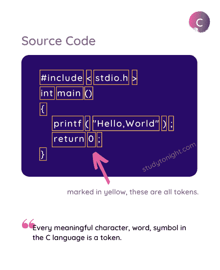
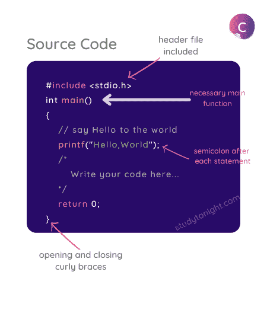

C 语言基本语法规则
C 语言语法指定了用 C 语言编写代码的规则。简而言之，这些规则告知如何在 C 语言程序中形成语句——代码行应该如何开始，它应该如何结束，在哪里使用双引号，在哪里使用花括号，在哪里使用括号，等等。
什么是语法？
任何语言，无论是英语、印地语还是西班牙语，都有一个语法，定义了使用语言的规则，例如如何组成句子，不同的单词意味着什么等等。
在正常的口语或计算机编程语言中，语法意味着如何排列单词、字符、特殊字符，以做出有意义的陈述或表达等。
如果有人说程序中有一个语法错误，意味着您没有正确编写程序，您可能在为程序键入代码时遗漏了一些分号或其他一些一般性错误。
有一个语法错误并不意味着你的代码逻辑不正确，它意味着你写错了。一旦语法正确，那么只编译代码，然后运行。
代币
C 程序中最小的单个单元被称为 C Token 。令牌可以是 关键字或标识符 、常量、 变量 ，或任何其他在 C 语言中有某种意义的符号。C 程序也可以称为各种代币的集合。
因此，C 语言的语法定义了在编写 C 语言代码时如何一起使用这些标记。
让我们举个例子，
#include <stdio.h>
int main()
{
printf("Hello,World");
return 0;
}
在上面的代码中，如果我们采用printf语句:
printf("Hello,World");
那么本声明中的代币为:printf、(、"Hello,World"、)和;。
所以 C 令牌基本上是 C 程序的构建模块。
下图显示了整个 Hello World 程序中的 token。

现在让我们看看一些重要的语法规则，在用 C 语言编写代码时，您必须始终记住这些规则。
语句以分号(;)结束
分号 ; 在 C 语言中用来标记一个语句的结束和另一个语句的开始。
任何语句末尾没有分号，都会误导编译器认为该语句尚未完成，会在其后添加下一个连续语句，可能导致编译(语法)错误。
#include <stdio.h>
int main()
{
printf("Hello,World")
return 0;
}
错误:应为“；”在‘返回’ 之前返回 0； ^ 命令终止，退出代码为 1
在上面的程序中，我们省略了printf("...")语句中的分号，因此编译器会认为从printf开始直到return 0语句之后的分号都是一条语句，这将导致编译错误。
向代码添加注释
注释是 C 程序中简单的纯文本，在编译过程中不进行编译。
我们可以在程序中写注释，来解释程序的各个部分。虽然写评论不是强制性的，但是建议让你的程序更有描述性，也更容易被别人理解。
添加注释使代码更易读。
有两种方式我们可以写评论。
使用
//:这是用来写一个单行评论。使用
/* */:任何包含在/*和*/中的内容，将被视为多行注释。
您甚至可以使用这两种技术注释掉代码，并且该语句或部分代码不会被编译和执行。
C 语言注释示例:
这里有一个简单的程序来展示如何使用注释:
/*
This is my first program.
I am very excited!
*/
#include <stdio.h>
int main()
{
// Printing Hello World
printf("Hello,World");
// printf("Useless piece of code.");
return 0;
}
从上面的代码中可以看到，我们添加了注释，并且还注释了一个printf()语句，这个语句不会被执行。
C 语言的更多语法规则
这只是一个开始，因为我们将在 C 语言中学习更多的概念，我们将学习使用它们的语法以及例子。
在编写代码时，任何东西都有一种编写和使用的方式，这就是它的语法。
C 是一种区分大小写的语言，所以所有的 C 指令都必须用小写字母写。主和主不一样。
所有 C 语句必须以分号结束。
空格在 C 中用于添加空格和制表符。
您不必担心代码的缩进。
当我们编写一个函数时，它的主体被包含在花括号中，就像对于
main()函数一样。我们将在讨论函数时详细了解这一点。
下图展示了 C 程序的结构。

常见问题解答
以下是一些与 C 语言语法相关的常见问题。
Q1。用 C 语言的代币能理解什么？
C 程序中最小的单个单元被称为 C Token 。令牌可以是 关键字或标识符 、常量、 变量 ，或任何其他在 C 语言中有某种意义的符号。C 程序也可以称为各种代币的集合。
Q2。如果我们忘记在 C 语言的语句末尾使用分号，会发生什么？
如果我们忘记在 C 语言的任何语句的末尾放置分号，那么它将导致语法错误。在这种情况下，编译器会发出一条错误消息，指出应为分号。
Q3。什么是编译错误？
编译错误或编译时错误是指如果 C 程序的语法不正确，编译器返回的错误。当你试图编译一个有语法错误的程序时，编译器会给出一个错误，这被称为编译时错误。
Q4。如何在 C 语言中添加注释？
我们可以在注释文本的开头使用//来添加单行注释，在 C 程序中将文本包含在/*和*/中来添加多行注释。
Q5。C 语言中没有main()功能的程序能运行吗？
在 C 语言中，main()函数定义了执行的起点。如果一个 C 程序没有main()函数，那么该程序中不会执行任何代码语句。在大多数情况下，如果编译器找不到main()函数，它会给出一个错误。
结论
本教程是关于 C 语言的基本语法规则。我们已经讨论了分号的重要性，C 语言中的标记，以及如何用 C 语言编写单行和多行注释。